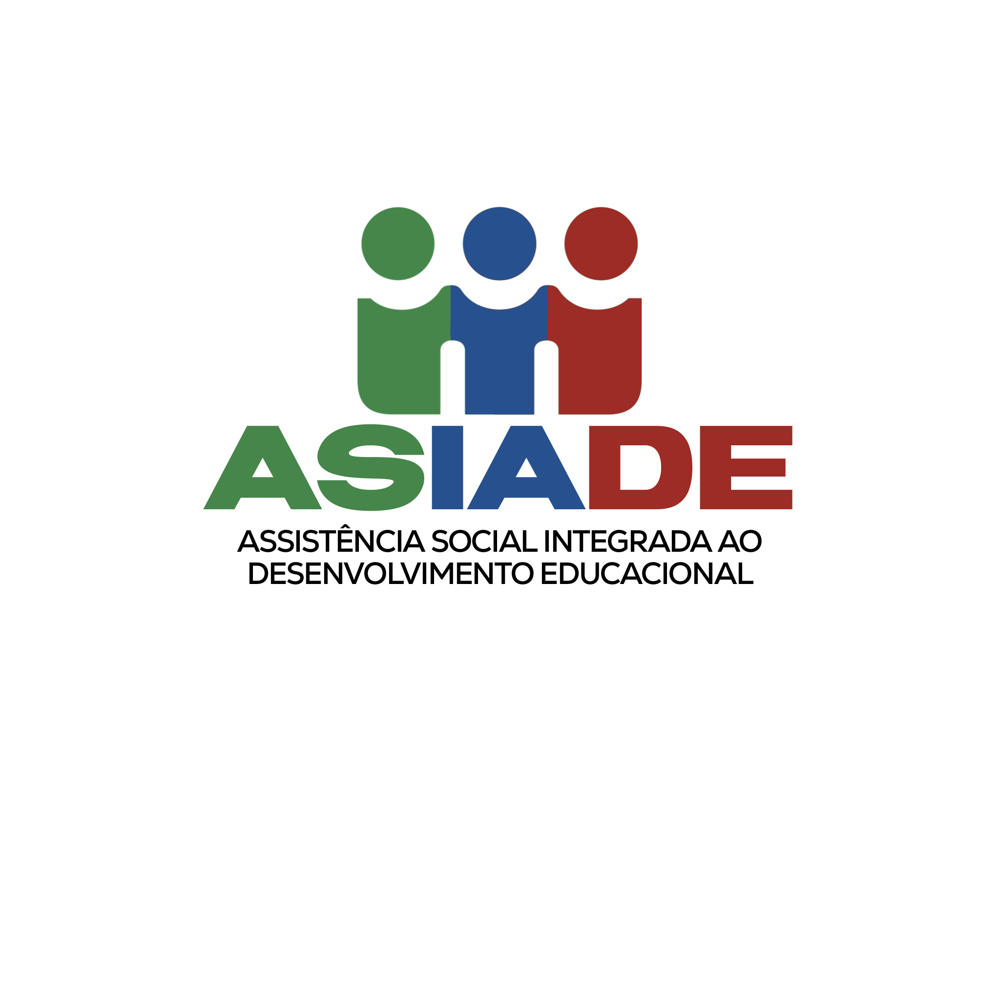

Sobre Nós
A Assembleia de Deus – Ministério Belém é uma igreja comprometida com o Reino de Deus, que tem como base a pregação fiel da Palavra, a busca constante pela presença do Espírito Santo e o amor ao próximo. Somos uma família de fé que acolhe pessoas de todas as idades, histórias e origens, com o objetivo de conduzi-las a um relacionamento pessoal com Jesus Cristo.
Programação Semanal
Segunda-Feira: Círculo de Oração - 19h30Terça-Feira: Ensaio Orquestra Blessed - 19h30Quarta-Feira: Oração Matutina - 05h301° Sexta-feira do Mês: Vigília Belém - 22h2° Sexta-feira do Mês: Culto Rosa - 19h30Domingo: EBD - 08h302° Domingo do Mês: Santa Ceia do Senhor - 09h & 18h3° Domingo do Mês: Culto de Missões - 18h
Nossos Ministérios
UMADCAJ (Jovens)
UCADEJ (Crianças)
 UFADCAJ (Mulheres)
GERAÇÃO GRAÇA (Adolescentes)
 ASIADE (Assistência Social)
BLESSED (Orquestra e Banda)
COMUNICAD (Comunicação)
BOANERGES (Homens)
SEMEAR (Missões)
PROJETO EU&ELA (Casais)
CORAL
TV ADBJ
Acompanhe nossas transmissões, cultos gravados e conteúdos edificantes.
Liderança
Pr. Reginaldo Ribeiro
Pastor Presidente
Irmã Michele Ribeiro
Esposa do Pastor
Entre em Contato
Endereço: R. Antônieta Aleixo de Souza, 77 – Conj. Hab. Margarida Raymundo Berchieri, Jaboticabal – SP
© 2025 Assembleia de Deus – Ministério Belém. Todos os direitos reservados.